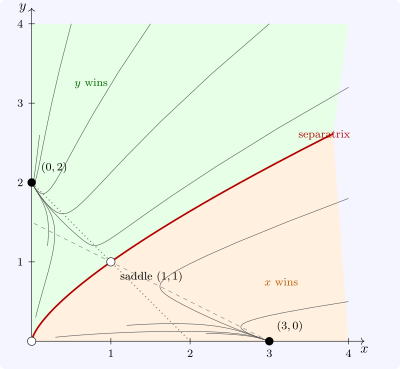

10.4 Competing species
Two species competing for the same resources are modelled by \[ x' = x(3 - x - 2y), \qquad y' = y(2 - x - y), \] in which each species grows logistically and is inhibited by the other. The equilibria are \((0, 0)\), \((3, 0)\), \((0, 2)\) and \((1, 1)\), with Jacobian \[ J(x, y) = \begin {bmatrix} 3 - 2x - 2y & -2x\\ -y & 2 - x - 2y\end {bmatrix} . \] At \((0, 0)\), \(J = \operatorname {diag}(3, 2)\), an unstable node: small populations grow. At \((3, 0)\), eigenvalues \(-3\) and \(-1\): a stable node, species \(x\) alone. At \((0, 2)\), eigenvalues \(-1\) and \(-2\): a stable node, species \(y\) alone. At the coexistence point \((1, 1)\), \(J = \begin {bmatrix} -1 & -2\\ -1 & -1\end {bmatrix}\), with determinant \(-1 < 0\): a saddle, with eigenvalues \(-1 \pm \sqrt 2\). All four are hyperbolic, so by Theorem 10.3.1 the linear classification describes the local portraits.
The global picture follows (Figure 14). Both axes are invariant, since \(x = 0\) or \(y = 0\) is preserved, so populations stay non-negative. The stable manifold of the saddle runs from the origin through \((1, 1)\) and divides the positive quadrant into two basins: initial states on one side end with species \(x\) alone at \((3, 0)\), those on the other with species \(y\) alone at \((0, 2)\). Coexistence is unstable, and which species wins depends on where the populations start. This is competitive exclusion with bistability. Its geometric signature is the arrangement of the nullclines: the \(x\)-nullcline \(x + 2y = 3\) meets the \(y\)-axis at \(\frac 32\), below the carrying capacity \(2\) of species \(y\), and the \(y\)-nullcline \(x + y = 2\) meets the \(x\)-axis at \(2\), below the carrying capacity \(3\) of species \(x\). Each species, at its own carrying capacity, suppresses the other below the level at which the other could invade, so each single-species state is stable.

Questions on this section
Stuck on something here? Ask below and it stays attached to this topic.